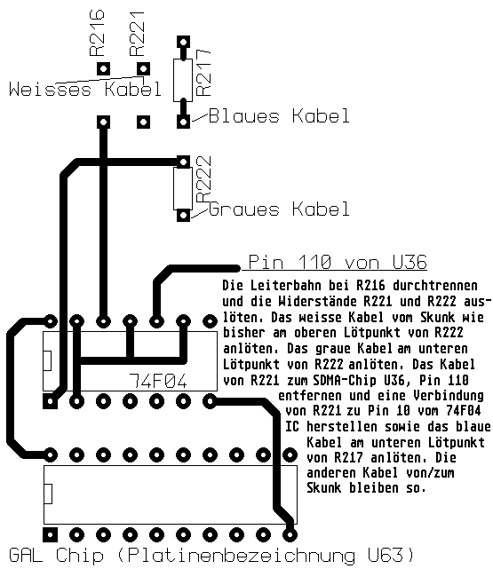

Previous
Next
TOC
Patchvariante 5 - Falcon030 (Designed by Michael Ruge@WI2)
*
*
Alle drei SMD-Widerstände auslöten und
|
|
durch Drahtbrücken ersetzen!
-
-
*
R216 ist für den Expansion Slot (Fal-
| |
| |
|
conspeed, Screeneye) zuständig, R221 für
| |
| |
-
die FPU/SoundDMA Taktleitung und R222
-
-
| |
für den CPU Takt.
R216
|
|R221| |
*
*
-
|R222
*
Patchvariante 6 - Falcon030 mit Skunk Beschleuniger

Ein Tip für die Musiker unter uns:
Cubase Audio auf 48 KHz Samplingrate im geöffneten Monitor-Fenster
einstellen. Ist auch nach Stunden in der Pegelanzeige kein einziger
Ausschlag zu sehen ist die DMA Taktlage jetzt richtig.
weiterblättern
Kapitel Der Falcon030 Clockpatch, Seite 10